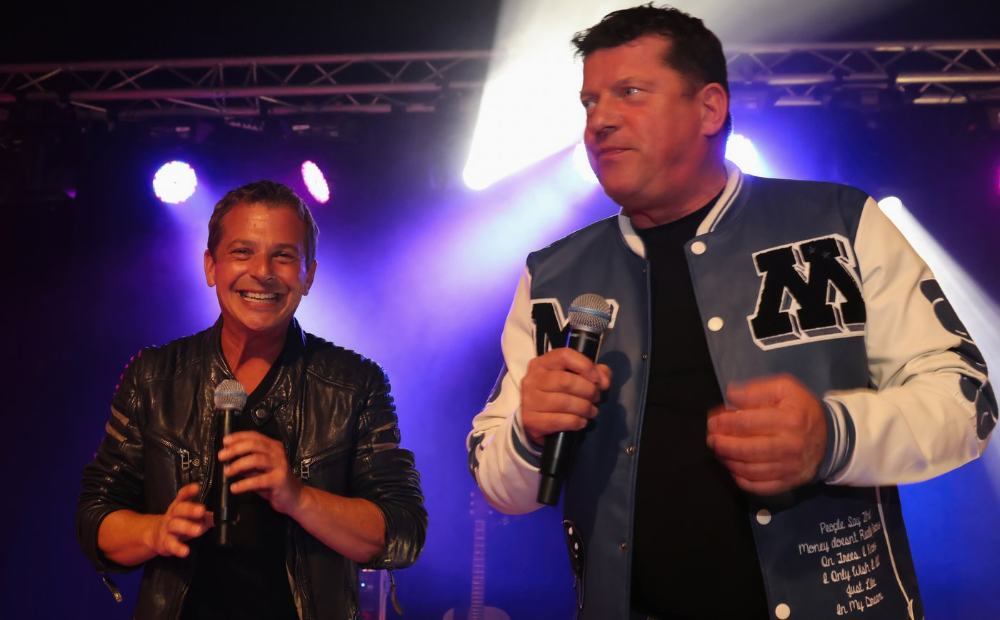
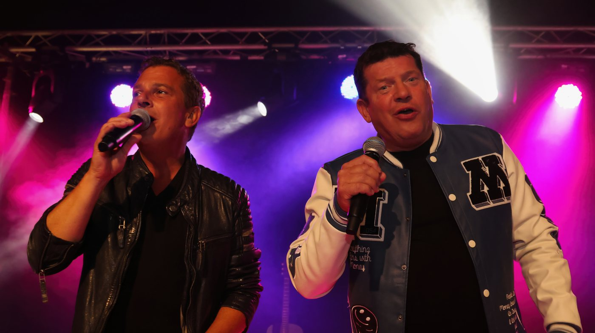
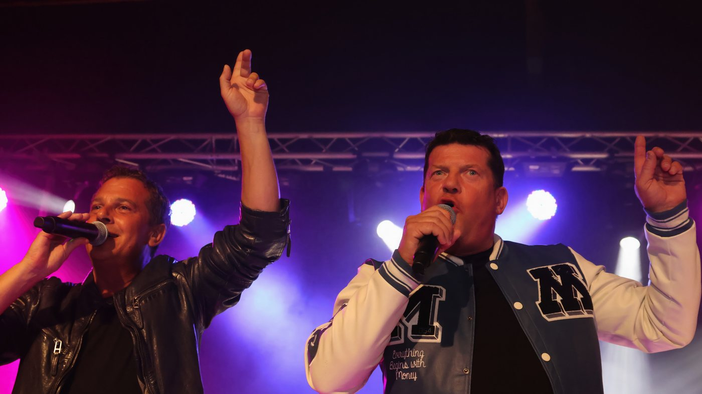

Zwei Stimmen. 25 Jahre Bühne.
Und ein Publikum, das steht.
Pressebereich · Radio-Bemusterung
VÖ Ende September / Anfang Oktober 2026. Der Titel ist mit einem Augenzwinkern gemeint — und genau so klingt er: frech, tanzbar, mit dem Humor, für den André und Friedhelm auf der Bühne geliebt werden. Für Bemusterung zur VÖ einfach kurz melden — Sie stehen dann ganz oben auf der Liste.
Die Silvanas — das sind André Kranz und Friedhelm Ralla aus Münster. Seit über 25 Jahren stehen die beiden gemeinsam auf der Bühne, und ihr Publikum bleibt ihnen treu wie kaum eines: Die Fanclubs reisen quer durch Europa hinterher.
Erst im August feierten die beiden ihr eigenes Fanfest „Silvanas & Freunde" in der Schweiz — zwei Tage volles Haus in Wangen an der Aare, auf der Bühne gemeinsam mit den Calimeros, Monique sowie Sigrid und Marina.
Was die Silvanas ausmacht? Keine große Show-Maschinerie: zwei Stimmen, viel Herz, echter Humor — und ein Saal, der nach drei Minuten steht.


„Goldene Herbstklänge" Serfaus-Fiss-Ladis (Tirol), 26.09.–10.10.2026 — die Silvanas stehen dort mehrfach auf der Bühne, gemeinsam mit Francine Jordi, Simone & Charly Brunner, den Calimeros, Oliver Haidt und Natalie Holzner. In diesen zwei Wochen sind die beiden für Interviews und Studiobesuche in der Region flexibel erreichbar.



{kind=link}